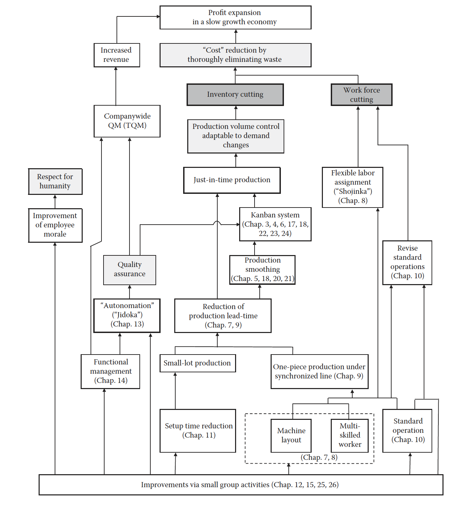
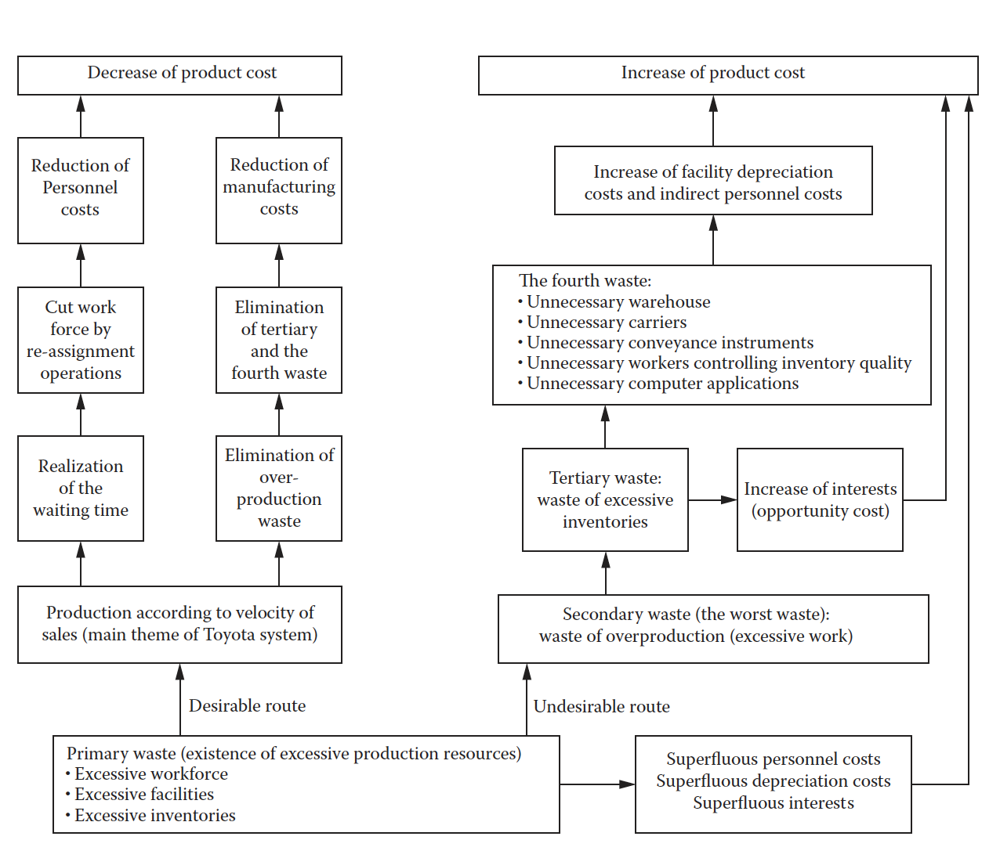
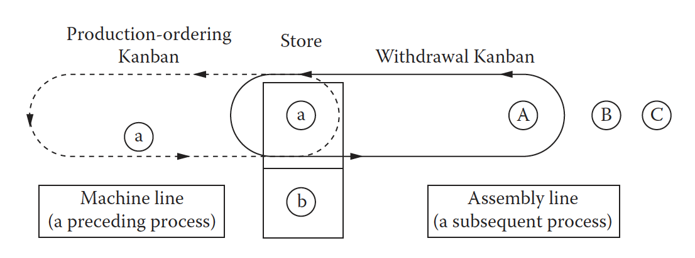
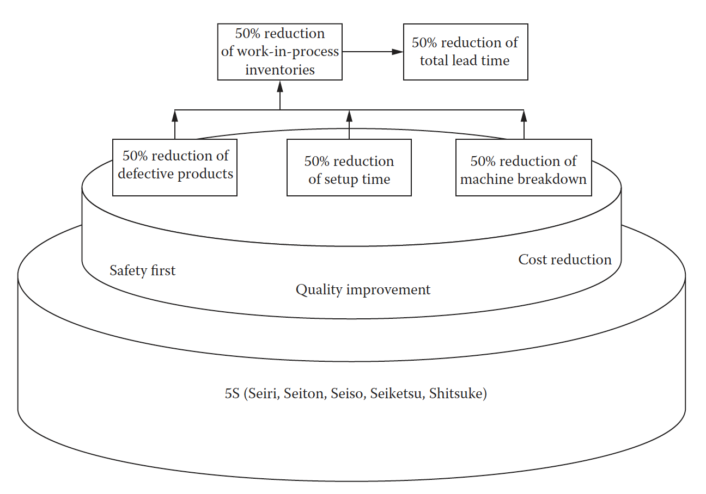
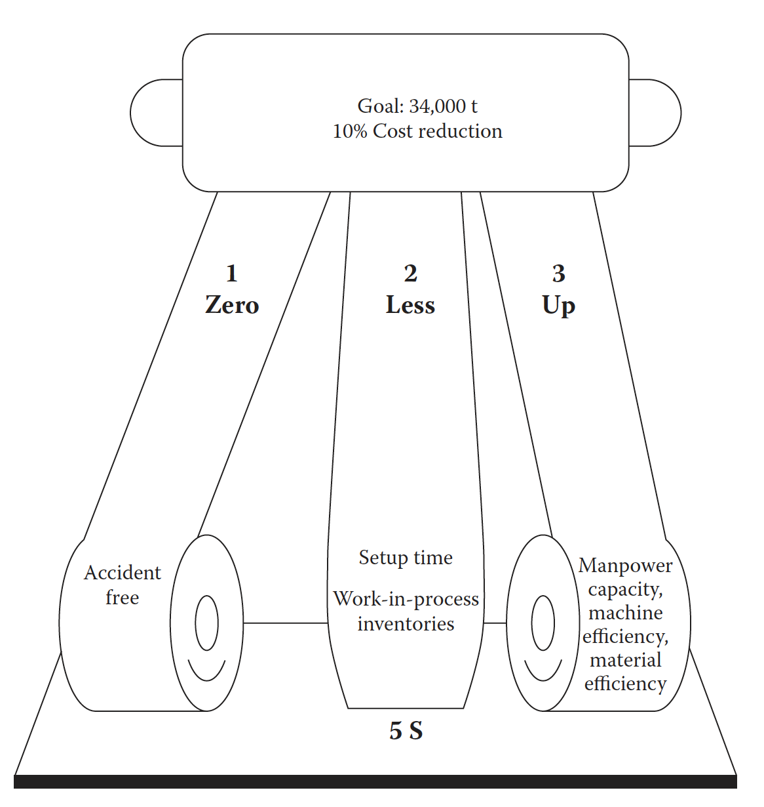

This book talks about the great sucess of Toyoto
Production Systems which was developed and promotoed by
Toyota Motor Corporation and is being adopted by many
Japanese companies in the aftermath of the 1973 oil
shock. The main purpose of the system is to eliminate
through improvement activities various kinds of waste lying
concealed within a company.

Framework of Toyota Production System:
Chapter 1: Total Framework of the Toyota Production
System
Primary Purpose
Profit through Cost Reduction:
primary goal of the Toyota Production System is
cost reduction, or improvement of productivity.
We can achieve the cost reduction by elimination of
excessive inventory and excessive workforce.
Elimination of Overproduction:
The most important part of Toyota Production
System is to reduce costs by completely
eliminating waste. There are four kinds of waste
in manufacturing production operations:
Excessive production resources:
people, equipment, materials, or products are
categorized as production resources, they only
increase cash outlay (costs) and add no value
when are in excess.
Overproduction:
Overproduction is to continue working when
essential operations should be stopped.
Excessive inventory:
Having lots of extra inventory makes us hire
more people, procure more equipment and have
more floor space to transport and stock the
inventory.
Unnecessary capital investment:
For handling all those excessive items, we end
up spending unnecessary capital.
Unnecessary capital investment include the
following:
Building a warehouse to store extra
inventory
Hiring extra workers to transport the
inventory to the new warehouse
Purchasing a fork lift for each
transporter
Hiring an inventory control clerk to work in
the new warehouse
Hiring an operator to repair damaged
inventory
Establishing processes to manage conditions
and quantities of different
types of inventory
Hiring a person to do computerized inventory
control

Cost Reduction by waste reduction
Quantity Control, Quality Assurance,
Respect for Humanity:
This is the most important goal of Toyota
production system because reducing costs without
implementing this goal is of no use. And all the
3 goals Quanity Control, quality assurance and
respect for humanity should be achieved combined.
Quantity control, which enables the system
to adapt to daily and monthly fluctuations in
demand of quantity and variety
Quality assurance, which assures that each
process will supply only good units to
subsequent processes
Respect for humanity, or morale, which must
be cultivated while the system utilizes human
resources to attain its cost objectives
Just-in-Time and Autonomation:
Just-in-Time and Autonomation are the key
concepts to establish continuous flow in the
production.
Just-in-time (JIT) basically means to produce the
necessary units in the necessary quantities at the
necessary time. Automation may be loosely
interpreted as autonomous defects control.
Flexible Workforce and Originality and Ingenuity:
Flexible workforce means varying the number of
workers to demand changes, and creative thinking
or inventive ideas means capitalizing on worker
suggestions.
The following systems and methods can be used to
achieve this goal:
• Kanban system
• Production smoothing method
• Shortening of the setup time
• Standardization of operations
• Machine layout and multi-function workers
• Improvement activities by small groups and
suggestion system
• Visual control system
• Functional management system
Kanban Systems
You can visit this link for more information regarding
Kanban systesm: Link
Kanban system is a part of Toyoto Production Systems,
it is an information system which harmoniously controls
the production quantities in every process.
Two kinds are mainly used: the withdrawal kanban and
the productionordering kanban. A withdrawal kanban
details the quantity which the subsequent process
should withdraw, while a production-ordering Kanban
shows the quantity which the preceding process must
produce.

Kanban System
Production Smoothing
Production in Accordance with Market Demand:
The final assembly line produces equally each kind of
product in accordance with its own daily time at the
speed it can be sold. The variation in the withdrawn
quantity of each part produced at each subassembly
line is minimized, thereby allowing the subassemblies
to produce each part at a constant speed or at a
fixed quantity per hour.
Shortening Setup Time
To shorten the setup time, it is important to neatly
prepare in advance the necessary jigs, tools, the
next die and materials, and to remove the detached
die and jigs after the new die is settled and the
machine begins to operate. This phase of setup is
called the external setup. Also, the worker should
concentrate on changing over the dies, jig, tools,
and materials according to the specs of the next
order while the machine is stopping. This phase of
setup actions is called the internal setup. The most
important point is to convert as much as possible of
the internal setup to the external setup.
Prcess Layout For Shortened Lead Times and One-Piece
Production
In a multi-process handling line, a worker handles
several machines of various processes one by one,
and work at each process will proceed only
when the worker completes his given jobs within a
specified takt time. As a result, the introduction
of each unit to the line is balanced by the
completion of another unit of finished product, as
ordered by the operations of a takt time. Such
production is called one-piece production
Standardization of Operations
The standard operations routine indicates the
sequence of operations that should be taken by a
worker in multiple processes of the department. This
is the order for a worker to pick up the materials,
put them on his machine, and detach them after
processing by the machine. This order of operations
continues for each machine that he handles. Line
synchronization or line balancing can be achieved
among workers in this department since each worker
will finish all of his operations within the takt
time.
Autonomation: Autonomous Defects Control System
Autonomation means to build in a mechanism to
prevent mass-production of defective work in
machines or product lines.
Mechanism to prevent defective work by putting
various checking devices on the implements and
instruments is called mistake-proofing (“bakayoke”
or “pokayoke”).
Improvement Activities
Each worker has the chance to make suggestions and
propose improvements via a small group called a
Quality Control (QC) circle. Such a suggestion-making
process allows for improvements (1) in quantity
control by adapting the standard operations routine
to changes in takt time, (2) in quality assurance
by preventing recurrence of defective works and
machines, and (3) in respect for humanity by
allowing each worker to participate in the
production process.
The Goal of TPS
The ultimate goal of the Toyota production system
is to improve the company’s “efficiency” (or
“productivity”) in terms of “return on investment”
(ROI) or “return on assets” (ROA).
Return on assets = Profit margin × Asset Turnover
= (Income/Sales) × (Sales/Assets)
Chapter 2 Implementation Steps for the Toyota Production
System
The steps for introducing a JIT process are discussed
in this chapter
Introductory Steps To The Toyota Production System
Step 1: Upper Management Plays a Key Role
It is important that the upper management launch the
efforts to the line workers and they should provide
all th resources to them. Doing so effectively
conveys that upper management is in complete support
of the change and, in fact, mandates change. Step 2: Establish a Project Team
The main objectives of project team is to organize
seminars and training about JIT concepts and
techniques and organize a JIT practice team for
sectional and sub-sectional managers Step 3: Prepare an Implementation Schedule and
Set Goals to Be Achieved within the Schedule Step 4: Introduce a Pilot Project
So start small and then implement JIT gradually
across plant-wide Step 5: Move from a Downstream Process
to an Upstream Process
Application Order of JIT Techniques
Introduction of the 5S foundation for
improvement—The foundation for improvements
in the workplace is the 5S concept: Seiri
(arrangement), Seiton (tidiness), Seiso
(cleaning), Seiketsu (cleanliness), and Shitsuke
(training).
Introduction of “one-piece production” within
the synchronized line
a. Change from sitting labor to standing labor
b. Lay out machinery in process sequence
c. Connect adjacent processes
d. Construct U-shaped lines
e. Deploy multi-process handling by multi-skilled
workers
f. Apply “jidoka” in the sense of separating
human operations from machine processing.
Implementation of small lot size production
and improvement of the setup method
Introduction of standard operations
a. Determine the required workforce number for
each line, based on takt time
b. Create a standard operations sheet
Implementation of smoothed production by
assembling products in response to sales velocity
Autonomation (“jidoka”)
Introduction of kanban cards
Introduction of JIT at Toyo Aluminum— A Case Study
How did they begin:
A JIT project promotion committee and a practice
team were established.
The team set a goal to reduce lead time by 50
percent. They then set four subgoals to help
realize the final objective.
The 5S improvement concept was promoted through
quality control circles.
A training program on 5S, JIT, TQC, and TPM
encompassing every organizational level was
developed.

GO GO Campaign:
The purpose of GO GO campaign was to reduce five
main items by 50 percent during a two and one-half
year period from June 1985–December 1987.

JUMP 60 Campaign:
Those five items were defective products, setup time,
machinery breakdowns, WIP and total lead time.
The objective of the Jump 60 campaign was to increase
productivity and decrease costs by the time the
company reached its 60th anniversary in 1991.
The goal of 34,000t was aimed to increase the present
production capacity of 31,000t by 10 percent per year
without additional capital investment or worker
transfers.
The three subgoals for these reductions are Zero,
Less, and Up.
Zero means the plant was accident free
Less means reduction of setup time and WIP
inventories
Up in the Jump 60 campaign is composed of three
components: manpower capacity, machine
efficiency, and material efficiency
total efficiency of facilities is given by the
following formula:
workable rate × speed operating rate × good product
rate